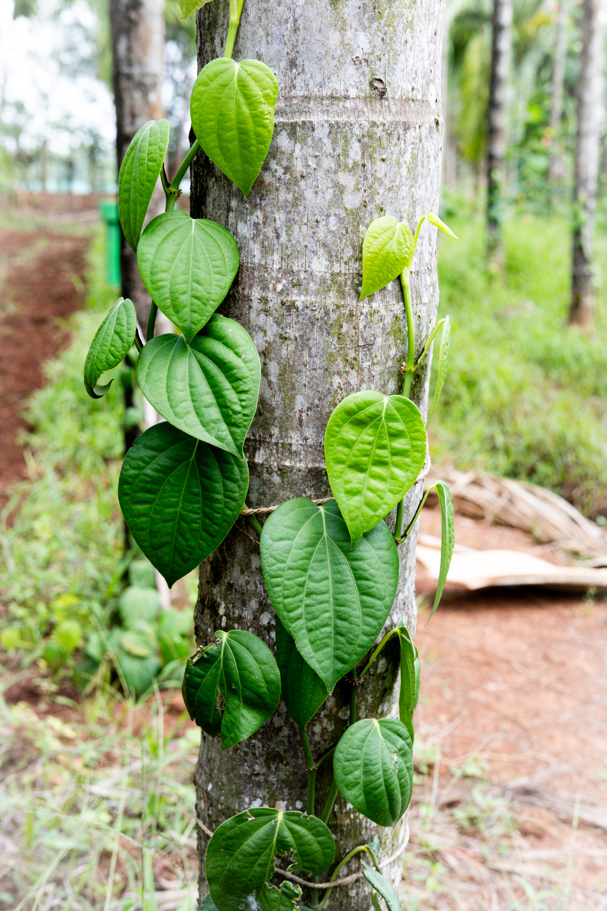
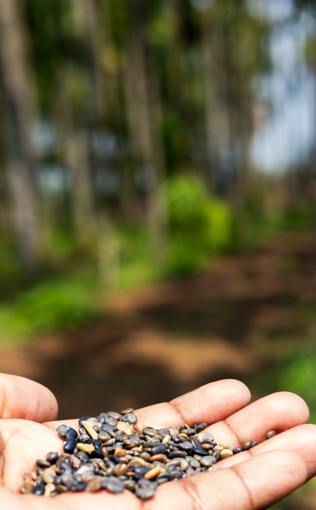
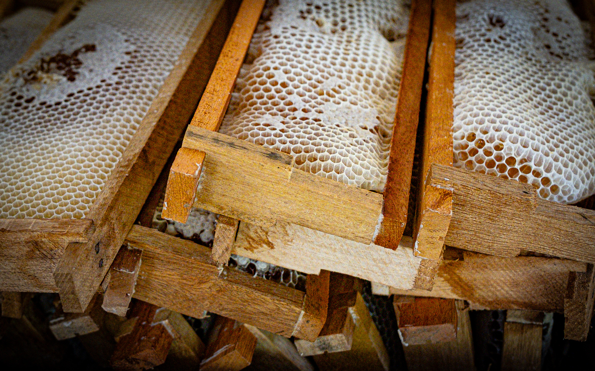

01 · canopy farming
Grown in layers
Pepper trained up areca trunks; banana, jackfruit and cocoa beneath. A canopy that earns in layers.
Fifty acres of working canopy in the Western Ghats — areca, pepper, soil, and signal.
scroll to enter the grovePlanted in rows that hold a canopy, not a monoculture.
Banana, jackfruit and cocoa fill the layers beneath.
Weather, soil moisture and birdsong — recorded as it happens, across the plots.

Pepper trained up areca trunks; banana, jackfruit and cocoa beneath. A canopy that earns in layers.

Pyrolysis trials on farm feedstock; the char goes back into the soil it came from.

Trichoderma-inoculated piles, tracked from start to spread. Farm waste becomes fertility on-site.

Hive boxes stand among the palms; the frames come out heavy when the canopy flowers.
Tempest weather, soil sensors over LoRaWAN, BirdNET acoustics — 20+ species heard so far.

IoT, drone and irrigation pilots run on working fields — with the crew that farms them.
If your hardware needs weather, soil, and a crew that shows up at dawn — bring it here.
apply via glb accelerator